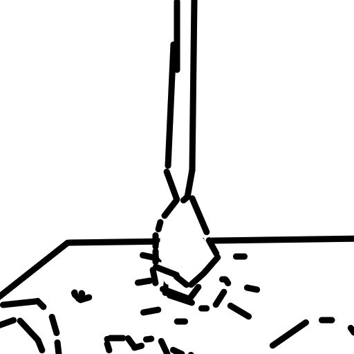

Я очень люблю придумывать всякие странные вещи. Например, подобные сайты, не очень эффективные алгоритмы
или даже работающие только в 60% случаях мобильные приложения.
Несколько моих любимых вещей
Я очень люблю программирование.
Обожаю постоянно строить новые вещи.

Мне нравится иногда рисовать. Между прочем
все иллюстрации для сайта сделал я сам.
Я люблю деньги. Если знаете, где можно достать деньги,
скажите мне пожалуйста.
И колу.
Я искренне считаю, что люди считающие себя умнее других сами не очень-то и умны.
Но иногда я замечаю за собой, что чувствую себя умнее остальных. Возможно, так
моё подсознание пытается мне сказать, что я придурок.
-Альберт Эйнштейн
Другие мои проекты (к сожалению, они работают только с компьютера):